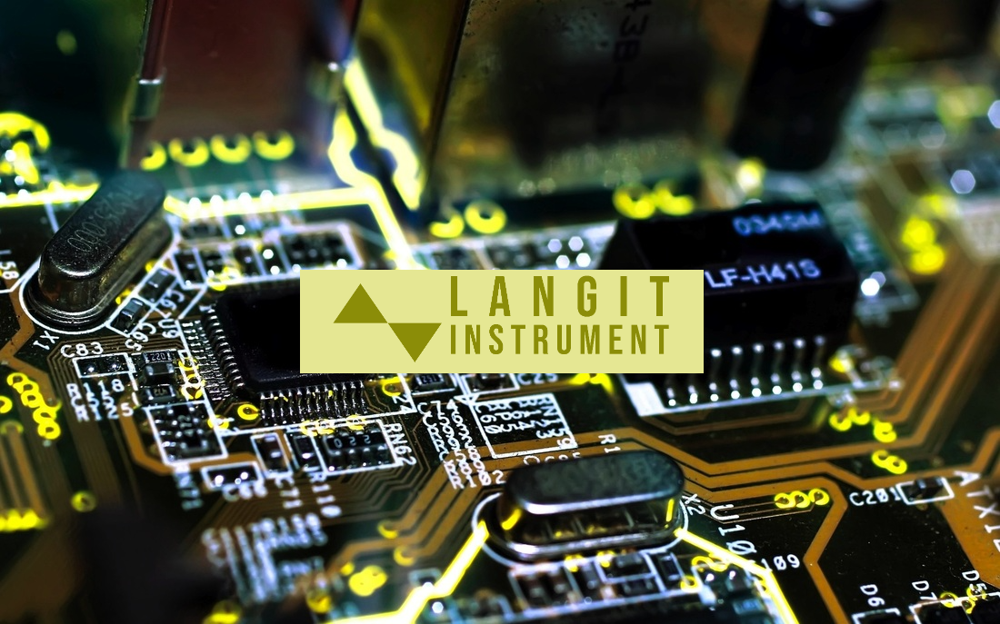

AI & Machine Learning
Perancangan model, pipeline data, dan otomasi cerdas untuk kebutuhan spesifik.
Riset & Pengembangan Teknologi
Langit Instrument bergerak di bidang AI, Computer Vision, IoT, Embedded System, FPGA, dan Instrumentasi Elektronik — menyediakan solusi teknologi dari desain hardware hingga implementasi sistem cerdas.

01 // Bidang Kerja
Enam bidang yang saling terhubung untuk membangun instrumen dan sistem yang utuh — bukan sekadar potongan komponen.
Perancangan model, pipeline data, dan otomasi cerdas untuk kebutuhan spesifik.
Deteksi, segmentasi, tracking, dan analisis visual secara real-time.
Sensor, gateway, dan konektivitas perangkat menuju platform monitoring.
Firmware bare-metal maupun RTOS, integrasi MCU/SoC, dan periferal.
RTL design, soft-core processor, dan akselerasi berbasis hardware.
Desain sistem pengukuran, kalibrasi, dan akuisisi data yang akurat.
02 // Tulisan & Eksperimen
Riset, eksperimen, dan tutorial teknis yang dipublikasikan di Medium — dari VFO portabel sampai soft-core RISC-V di FPGA.
03 // Video
Eksperimen hardware, firmware, dan AI yang direkam langsung dari bench.
04 // Tentang
Langit Instrument adalah ruang riset dan pengembangan yang berfokus pada AI, Computer Vision, IoT, Embedded System, FPGA, dan Instrumentasi Elektronik.
Kami menyediakan solusi teknologi dari desain hardware hingga implementasi sistem cerdas — mulai dari pemilihan komponen, perancangan PCB dan RTL, firmware, hingga integrasi model AI dan visualisasi data.
05 // Kontak
Ceritakan kebutuhanmu — dari prototipe cepat sampai pengembangan sistem penuh.
Konsultasi langsung, diskusi teknis, dan koordinasi proyek.
+62 813-3832-7438Ikuti update kegiatan, dokumentasi, dan diskusi komunitas.
facebook.com/langitinstrumentBiasanya membalas dalam 1×24 jam pada hari kerja.
Video